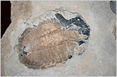
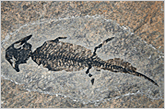
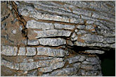
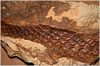
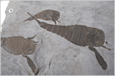

생성원리

대표적인 화석
- 
삼엽충 (캐나다)
- 
양서류 (체코)
- 
산호 (중국)
- 
석송 (미국)
- 
바다전갈 (미국)
IGTS 분류표
| 누대(Eon) | 대(Era) | 기 (period, gene) |
세 (epoch, cene) |
주요 사건 | 시작시기 (Ma전) |
|
|---|---|---|---|---|---|---|
| 현생누대 | 고생대 | 캄브리아기 | 전세 | 캄브리아 폭발(Cambrian Explosion)로 칭하는 생물계의 수와 종이 증가하여 삼엽충, 해면/완족동물 등이 풍부, archeocyatha가 번성하였고 최초의 척추동물이 출현 | 542 | |
| 중세 | 513 | |||||
| 후세 | 501 | |||||
| 오르도비스기 | 전세 | 무척추동물의 번성, 원시산호, 앵무조개, 극피동물, 필석종 등이 존재, 전세에 코노돈트라는 부유성 척추동물 출현, 후세에 빙하기가 나타났고 원시 육상동물이 출현 | 488.3 | |||
| 중세 | 471.8 | |||||
| 후세 | 460.9 | |||||
| 실루리아기 | 란도베리세 | 최초의 관다발 조직을 가진 육상생물 출현(노래기,절지동물), 턱을 가진 최초의 어류 출현, 삼엽충, 완족/연체동물 풍부 | 443.7 | |||
| 웬록세 | 428.2 | |||||
| 루들로세 | 422.9 | |||||
| 프리돌리세 | 418.7 | |||||
| 데본기 | 전세 | 육상에는 최초의 석송, 속씨식물, 나무가 출현, 암모나이트가 존재했고 두족강이 나타남, 수생 양서류가 출현했고 붉은 대륙(old red continent)으로 알려진 유라메리카가 존재 | 416 | |||
| 중세 | 397.5 | |||||
| 후세 | 385.3 | |||||
| 석탄기 | 미시시피아기 | 전세 | 거대 나무가 존재하고 척추를 가진 최초의 육상생물 출현, 원시상어가 풍부했고 삼엽충과 앵무조개는 쇠퇴, 곤드와나 동부지역에 빙하작용이 나타남 | 359.2 | ||
| 중세 | 345.3 | |||||
| 후세 | 326.4 | |||||
| 펜실베니아기 | 전세 | 곤충과 양서류가 번성하였고 최초의 파충류가 등장, 석탄의 재료가 되는 나무가 출현하였고 대기 중 산소의 양이 증가 | 318.1 | |||
| 중세 | 311.7 | |||||
| 후세 | 306.5 | |||||
| 페름기 | 시수랄리아세 | 팡게아 초대륙으로 합쳐짐, 파충류가 번성하였고 석탄기의 식물군이 풍부, 페름기 끝에 빙하기가 나타나 페름기 대멸종이라 하여 생물종의 95%가 사라짐 | 299 | |||
| 과달루피아세 | 270.6 | |||||
| 로핑기아세 | 260.4 | |||||